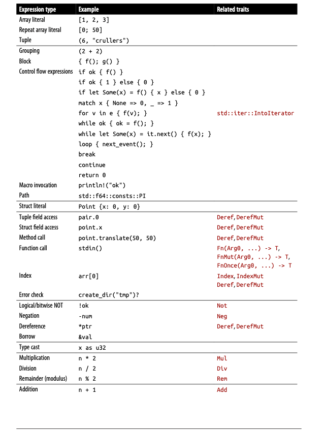
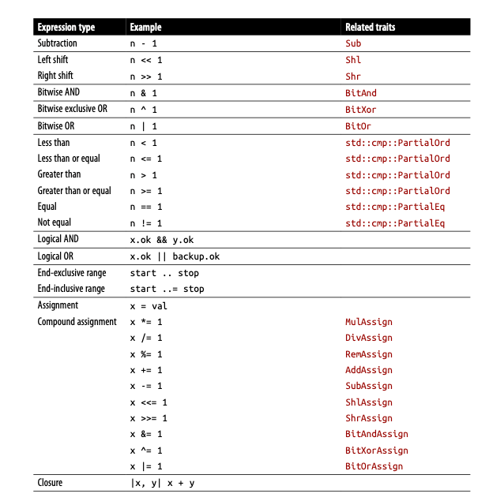

【Rust】表达式
Rust 被称作表达式语言，在C中，if 和switch 是语句，它们不会产生值，也不能在表达式中间使用。在Rust中，if 和 match可以产生值。例如：
1 | let status = if cpu.temperature <= MAX_TEMP { |
这解释了为什么Rust没有C的三元运算符(expr1: Expr2: expr3)，在 C 中，它类似 if 语句，而在 Rust 中，if 完全可以代替。另外大多数控制流在 C 中是语句，而在 Rust 中是表达式（语句都会以 ; 结束，而表达式没有）。
下面是 Rust 中所有支持的表达式列表：


下面的运算符都是左联运算符。例如：a - b - c 被分组成 (a-b)-c，而不是 a - (b - c)：
* / % + - << >> & ^ | && || as
比较运算符，赋值运算符以及范围运算符 .. 不能被链在一起使用。
代码块和分号
块，也就是一个大括号，是最通用的表达方式，它能产生一个值，可以在任何需要值的地方使用：
1 | fn main() { |
Some(author) => 后面是简单的表达式 author.name()，而 None 后面是一个块表达式，它的值是其中的最后一个表达式 ip.to_string() 的值，并且要注意它的后面没有分号。
确实大多数 Rust 代码行都是以 ; 分号结束的，如果一个代码块以 ; 结束，那么它的值是 ()。在 javascript 中，允许省略 ;，但是语言会自动填充。在 Rust 中有没有分号是有不同的意义的：
1 | fn main() { |
代码块内可以做一些声明，并且在最后返回一个值，能够使代码看起来比较整洁，用多了会觉得很爽。缺点是当忘记加分号时，可能会引发错误。但一般情况下是编译器都会提示我们。
声明
let 语句的形式如下，其中的 type 和 expr 是可以省略的：
let name: type = expr;
let 语句可以只声明一个变量而不用初始化，可以在后面的代码中用赋值语句初始化它。这有时候很有用，我们可以先声明一个变量，然后在下面的控制流代中初始化它：
1 | let name; |
这里局部变量有两种不同的方式初始化，但无论哪种方式，name 仅被初始化一次，所以无需声明为 mut 类型，在没有初始化之前使用变量是不允许的。
Rust 代码中允许重新二次定义同名变量，它会在这个二次定义的变量存在期间，将之前的变量屏蔽。在这里，line 开始的类型是 Result<String, io::Error>，后面又是 String，这在代码中是非常常见的，具有同一个语义的变量具有不同的类型。
1 | for line in file.lines() { |
我们甚至可以在代码块中声明一个 fn 或者结构体，但是它们的作用域仅限于这个代码块。当我们在代码块中定义函数时，它是不能访问代码块中的局部变量的。例如，下面的 cmp_by_timestamp_then_name 不能访问变量 v：
1 | use std::io; |
if 和 match
if 表达式比较简单，形式如下：
1 | if condition1 { |
每个 condition 必须是一个 bool 类型的表达式，Rust 不会对数字或者指针进行隐式转换。condition 两边的括号不是必须的，如果添加了，rustc 会给一个告警。
match 语句很像 C 语言中的 switch，但是更加灵活，下面是一个简单的例子。这很像 switch 语句根据 code 的值具体执行某个分支的表达式，通配符 _ 就像 switch 中的 default，能匹配任何东西，只是它必须放在最后面。将 _ 放在之前，意味着它的优先级更高，在它的之后匹配都不可达。
1 | match code { |
match 表达式经常用于去区分 Option 的两种类型：Some(v) 和 None：
1 | match params.get("name") { |
match 的通用形式如下：
1 | match value { |
如果 expr 是一个代码块，那么逗号 , 是可以省略的的。Rust 从头开始检查 value 和哪个 pattern 匹配，一旦匹配，表达式 expr 就会被执行，后面的 pattern 就不会被检查了，所以如果我们将通配符 _ 放在最前面，那么在它后面的 pattern 都不会被检查了。rust 中，match 表达式必须包含所有可能的情况，例如下面的代码会编译失败:
1 |
|
编译器提示我们有未覆盖的情况，建议我们使用通配符：
error[E0004]: non-exhaustive patterns: `i32::MIN..=-1_i32` and `3_i32..=i32::MAX` not covered
--> src/main.rs:4:11
|
4 | match code {
| ^^^^ patterns `i32::MIN..=-1_i32` and `3_i32..=i32::MAX` not covered
|
= note: the matched value is of type `i32`
help: ensure that all possible cases are being handled by adding a match arm with a wildcard pattern, a match arm with multiple or-patterns as shown, or multiple match arms
|
7 ~ 2 => println!("User Asleep"),
8 ~ i32::MIN..=-1_i32 | 3_i32..=i32::MAX => todo!(),
所有的 if 分支返回的值类型必须是相同的：
1 | let suggested_pet = |
同理，match 表达式也是，所有的分支必须返回相同类型的值：
1 | let suggested_pet = |
更多关于 match 的用法可以看 【Rust】实战突破 或者 模式匹配。
if let
这里还有一个 if 的形式，if let 表达式：
1 | if let pattern = expr { |
如果给定的表达式 expr 匹配 pattern，那么 block1 将会运行；如果不匹配，block2 就会运行。这是一个从 Option 或者 Result 获取数据比较好的方式：
1 | if let Some(cookie) = request.session_cookie { |
if let 可以做的事情 match 都可以做，所以说 if let 只是 match 的一种简写方式：
1 | match expr { |
循环
这里有四种循环表达式：
1 | while condition { |
Rust 中的循环语句都是表达式，但是 while 和 for 的值永远是 ()，所以它们不是很有用，loop 倒是可以返回一个值，当然只有在你声明的时候。
while 循环和C语言很像，但是 Rust 中的 condition 必须是精确的 bool 类型。
while let 类似于 if let。在每次循环迭代开始的时候，expr 的值如果匹配 pattern，那么 block 就会运行，负责循环就会退出。
loop 经常用于去写无限循环，它会一直重复执行 block，直到遇到 return，break 或者 panic。
for 循环会计算 iterable 表达式获得一个值，然后运行 block 依次。这里有许多可以迭代的类型，包括标准集合中所有类型，例如: vec 和 HashMap。
标准的C循环：
1 | for(int i = 0;i < 20; i++) { |
在 rust 中写作如下的形式：
1 | for i in 0..20 { |
.. 运算符可以生成一个 range，它是一个具有两个字段（start 和 end）的简单结构体。0..20 很像标准库中的 std::ops::Range { start: 0, end: 20 }。Range 可以被用于 for 循环，是因为它实现了 std::iter::IntoIterator。
有一点需要记住的是 for 循环会 move 值得所有权并且它包含的元素，所以下面这段代码编译失败：
1 | fn main() { |
编译器提示我们，由于隐式调用 .into_iter() 方法，strings 包含的值的所有权已经被转移，他已经处于未初始化状态：
error[E0382]: borrow of moved value: `strings`
--> src/main.rs:7:29
|
2 | let strings = vec!["hello", "world"];
| ------- move occurs because `strings` has type `Vec<&str>`, which does not implement the `Copy` trait
3 | for s in strings {
| ------- `strings` moved due to this implicit call to `.into_iter()`
...
7 | println!("{} error(s)", strings.len()); // error: use of moved value
| ^^^^^^^^^^^^^ value borrowed here after move
|
这看起来很不方便，改进的方式是使用引用迭代集合，例如：
1 | for rs in &strings { |
如果我们在迭代过程中需要对它进行更改，可以获取 strings 的 muteable reference：
1 | fn main() { |
运行成功：
/Users/fudenglong/.cargo/bin/cargo run --color=always --package mandelbrot --bin mandelbrot
Finished dev [unoptimized + debuginfo] target(s) in 0.00s
Running `target/debug/mandelbrot`
hello
world
2 error(s)
Process finished with exit code 0
break 和 continue
可以使用 break 退出 loop 循环，在 loop 的循环体中，可以给 break 一个表达式，它的值变成 loop 的值，loop 中所有 break 的表达式都必须要有相同的类型：
1 | // Each call to `next_line` returns either `Some(line)`, where |
continue 表达式用于跳到下次迭代：
1 | // Read some data, one line at a time. |
对于嵌套的循环，我们如何直接从内部退出。在 Rust 中，我们可以给循环一个label，用于在 break 时退出到哪层循环。例如：
1 | 'search: |
当然，break 语句也可以将表达式和label一起使用：
1 | // Find the square root of the first perfect square // in the series. |
label 也可以配合 continue 使用。
return
return 语句用于退出当前的函数，返回值给调用者，特殊情况，return; 其实就是 return (); 的简写。 函数一般可能没有显示的 return 语句，函数体很像一个 block，如果最后一个表达式没有以 ; 结尾，那么它就是函数的返回值，一般情况下，这是 Rust 函数中用于返回值得首选方式。
但这并不意味着 return 是没用的，就像 break 一样，return 可以提前结束函数的运行。例如，下面的示例，当函数调用返回错误时，我们可以提前返回：
1 | let output = match File::create(filename) { |
never 类型 !
! 表示 never 类型。在 Rust 中，有些函数，可能包含死循环，panic!() 或者类似 std::process::exit() ，这些函数都无法正常完成，它们的返回值难以确定是什么类型，例如，标准库中的 std::process::exit()，它的源码是这样的：
1 | pub fn exit(code: i32) -> ! { |
在Rust中，这些函数没有正常类型，未正常完成的表达式被分配到特殊类型!，并且它们不受类型必须匹配的规则的约束。例如我们编写下面这样的函数：
1 | fn serve_forever(socket: ServerSocket, handler: ServerHandler) -> ! { |
函数和方法调用
函数调用和方法调用同其他的语言比较类似：
1 | let x = gcd(1302, 462); // function call |
Rust 在引用和值之间有明显的区分，所以在传递参数时精确的类型，如果函数需要 i32 类型，你传入的是 &i32 类型就会报错。但是 . 运算符放宽了这些规则，在 player.location() 的方法调用中，player 可能是 Player，&Player，Box<Player> 或者 Rc<Player>。.location() 方法可以通过值或引用来获取 player，因为 Rust 的 . 运算符能够自动解引用或根据需要创建引用。
另外一种语法是和类型关联的函数，例如 Vec::new()，类似于面向对象语言中的静态方法
1 | let mut numbers = Vec::new(); // type-associated function call |
方法调用可以串联起来：
1 | server |
Rust 语法的一个怪癖是，在函数调用或方法调用中，泛型类型的常用语法 Vec<T> 不起作用：
1 | return Vec<i32>::with_capacity(1000); // error: something about chained comparisons |
问题是表达式中的 < 被当做小于运算符，正确的语法是：
1 | return Vec::<i32>::with_capacity(1000); // ok, using ::< |
Rust 社区将 ::<...> 叫做 turbofish，但是我们也可以省略它们，改由Rust进行推断：
1 | return Vec::with_capacity(10); // ok, if the fn return type is Vec<i32> |
字段和索引
结构体字段的访问和其他语言比较类似，tuple 采用相同的语法，只是它只能使用数字作为索引。如果 . 左边是个引用或者智能指针，会自动进行解引用：
1 | game.black_pawns // struct field |
[] 用于访问数组，slice 或者 vector 的元素：
1 | pieces[i] |
这些变量可以被当做左值表达式，如果它们被声明为 muteable，例如：
1 | game.black_pawns = 0x00ff0000_00000000_u64; |
可以使用 .. 运算符从一个数组，slice 或者 vector 获取一个 slice，例如：
1 | let second_half = &game_moves[midpoint .. end]; |
.. 运算符可以省略一些操作数，总共有下面这些操作类型，区间是左闭右开类型的，例如：0 .. 3 是 0, 1, 2：
1 | .. // RangeFull |
..= 运算符可以包含右边的结束值，例如 0 ..= 3 是 0, 1, 2, 3：
1 | ..= b // RangeToInclusive { end: b } |
但是在循环中，必须要有起始位置，因为循环必须要有个起始点。不过在数组切片中，六种形式都是有用的，如果 start 和 end 被省略，就会指向 slice 全部。
下面是一个分值算法的示例，用于实现快速排序：
1 | fn quicksort<T: Ord>(slice: &mut [T]) { |
解引用操作符
一元 * 操作符被用于访问引用指向的值，由于 . 在访问结构体字段或者方法时会自动解引用，所以 * 没有太多发挥的场景。
1 | let padovan: Vec<u64> = compute_padovan_sequence(n); |
算数，位运算，比较和逻辑运算符
大多数适合是和C语言比较相似的，我们来看一些特别的例子。- 可以用于表示负数，但是没有对应的 +。
1 | println!("{}", -100); // -100 |
与 C 中一样， a % b 计算除法向零舍入的有符号余数或模数。结果与左操作数的符号相同。请注意，% 可用于浮点数和整数：
1 | let x = 1234.567 % 10.0; // approximately 4.567 |
Rust 也继承了 C 的位运算符，&, |, ^, <<, >>，只是 Rust 中使用 ! 表示 NOT 而不是 ~：
1 | let hi: u8 = 0xe0; let lo = !hi; // 0x1f |
移位运算符在处理有符号数时进行符号扩展，在处理无符号整数时进行0扩展。
位运算符比比较运算符有更高的优先级，这点和 C 语言不太一样。x & BIT != 0 表示 (x & BIT) != 0。
比较运算符 ==, !=, <, <=, >, >= 中的两个操作数必须要有相同的类型。
逻辑运算符 || 和 && 两个操作数必须都是 bool 类型。
赋值
= 赋值运算符用于变量的初始化，或者对可变变量，或者它们的字段，内部元素进行赋值。Rust 不同与其他语言，默认情况下，变量都是不可变的，也就是不能修改。
另外，如果值是 non-copy 类型，那么赋值运算符将会转移它的所有权，值原来的所有者就会变成未初始化状态。
除了基本的赋值运算符之外，还支持组合赋值，例如：+=，*=，-=等等：
1 | total += item.price; |
要注意的是，Rust 不支持C中的链式赋值，所以 a = b = 3 是不允许的，也不支持自增自减运算符 ++ 和 --。
类型转换
Rust 中的类型转换需要显示的使用 as 关键字：
1 | let x = 17; // x is type i32 |
下面是几种允许显示转换的类型：
-
内建的数字类型可以相互转换；将整数转换为另一种整数类型始终是明确定义的。转换为更窄的类型会导致截断。转换为更宽的有符号整数是符号扩展的，无符号整数是零扩展的，依此类推。从浮点类型转换为整数类型会向零舍入：
-1.99 as i32将会得到-1。如果该值太大而无法放入整数类型，则强制转换会生成整数类型可以表示的最接近的值：1e6 as u8将是255； -
bool或char类型或类似C的枚举类型的值可以转换为任何整数类型，但是反过来转换是不允许的，例如，禁止将u16强制转换为char类型，因为某些u16值（如0xd800）对应于无效的Unicode码点，它不是有效的char值。有一个标准方法，std::char::from_u32()，它执行运行时检查并返回一个Option<char>，但这种转换的需求很少。作为一个例外，u8是唯一可以转换成char的类型，因为它的范围0-255都是有效的ASCII字符；
我们说过转换通常需要强制转换，一些涉及引用类型的转换非常简单，即使没有强制转换，语言也会执行它们。下面是一些自动转换的场景：
String类型的值可以自动转换为&str类型；&Vec<i32>类型的值可以自动转换为&[i32]类型；&Box<Chessboard>类型的值可以自动转换为&Chessboard类型；
闭包
Rust 有闭包，轻量级的类似函数的值。闭包通常由一个参数列表，在竖线之间给出，后跟一个表达式：
1 | let is_even = |x| x % 2 == 0 |
Rust 可以推断参数类型和返回类型，当然也可以向函数那样明确写出来。但是如果指定了返回类型，则为了语法上的完整性，闭包体必须是一个块：
1 | let is_even = |x: u64| -> bool x % 2 == 0; // error |
闭包的调用和函数调用语法一样：
1 | assert_eq!(is_even(14), true); |